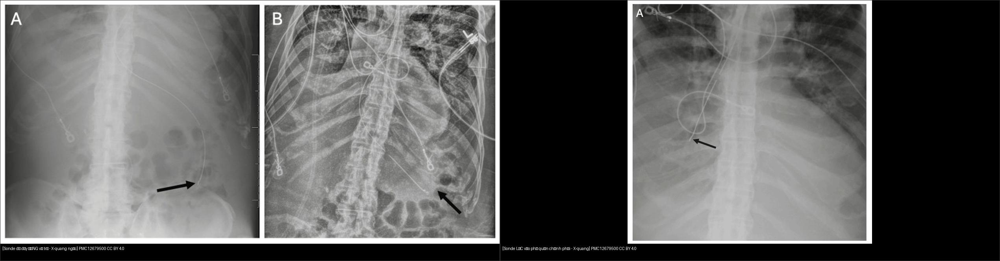
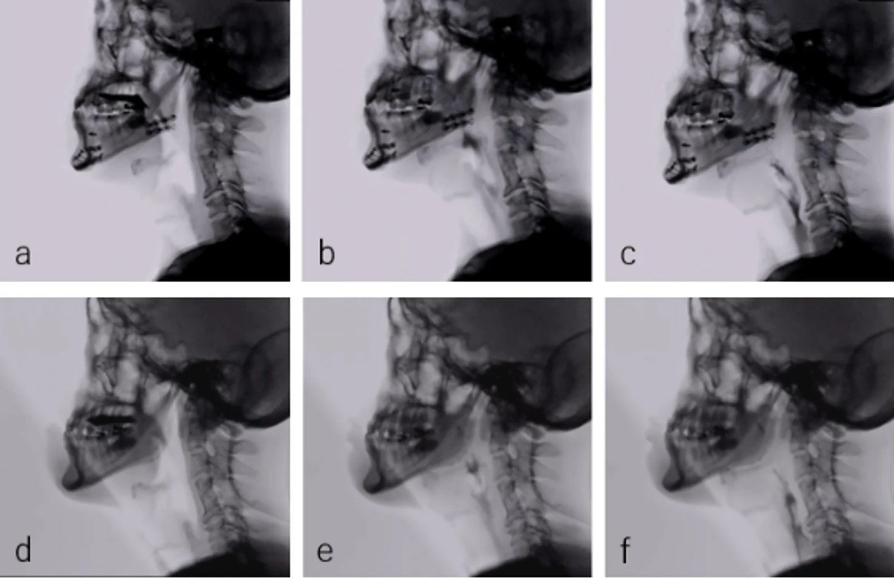
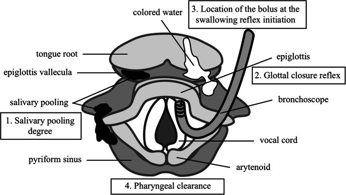
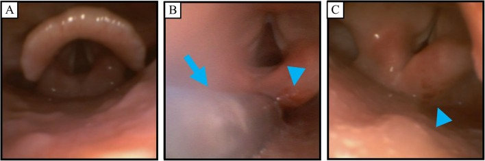
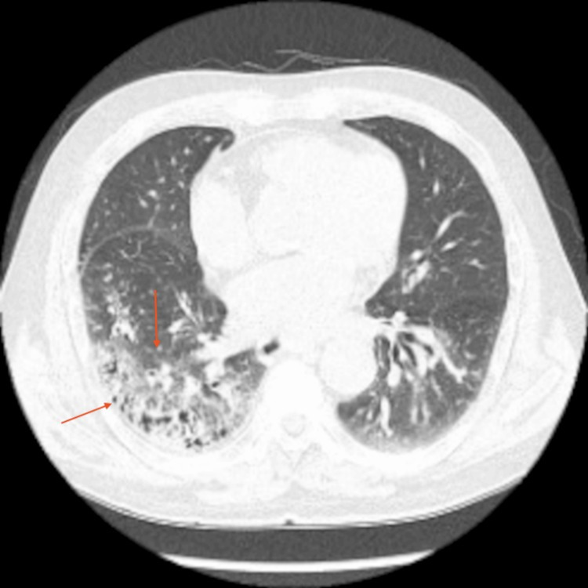
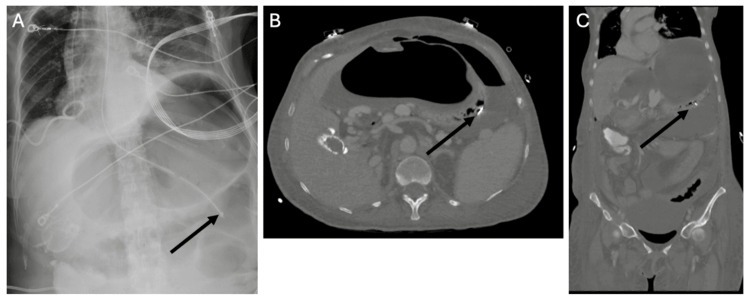
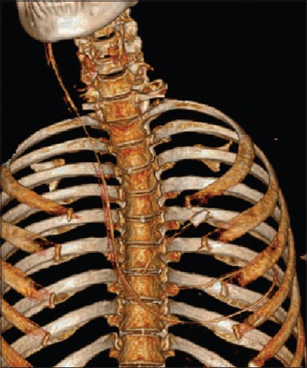
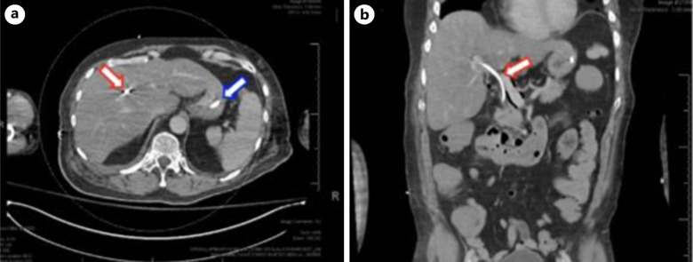

081 — Sặc & rối loạn nuốt: VFSS/FEES, viêm phổi hít sặc & vị trí sonde dạ dày / Aspiration & dysphagia
Tags: pattern:sac-hit-sac pattern:roi-loan-nuot vung:duong-nuot vung:thanh-quan vung:phe-quan vung:phoi score:PAS score:Hyodo protocol:VFSS protocol:FEES protocol:sonde-da-day incidentaloma:viem-phoi-hit-sac
Mức chắc chắn (certainty): tổng hợp y văn (literature synthesis) — số liệu lấy từ các nghiên cứu/cohort truy cập mở (PMC10981800, PMC11555015, PMC13414394, PMC12013387) + ca nguyên văn minh họa (PMC11965062, PMC12982160, PMC12935128, PMC13345614); không tự suy diễn ngoài nguồn.
Nối tiếp 015 – Ống/dây ICU (vị trí đầu sonde dạ dày) và 031 – Viêm phổi mẫu hình (viêm phổi hít sặc). Bài này trả lời 3 câu: (1) nuốt bình thường gồm những thì nào; (2) làm sao nhìn thấy sặc (VFSS/FEES) và phân độ nó; (3) khi nào một mức dịch/tổn thương trên phổi là do sặc, và kiểm tra sonde dạ dày cho đúng.
1. Tổng quan bệnh học – cơ chế hình ảnh
- Nuốt bình thường (deglutition) gồm 3 thì liên tục: thì miệng (oral) – nhai, tạo viên thức ăn và đẩy ra sau lưỡi; thì hầu (pharyngeal) – mở cơ thắt hầu–thực quản trên (UES), gập nắp thanh môn (epiglottis), đóng dây thanh để bảo vệ đường thở; thì thực quản (esophageal) – nhu động đưa thức ăn xuống dạ dày. Rối loạn nuốt (dysphagia) hầu–miệng (oropharyngeal) liên quan trực tiếp tới an toàn đường thở; rối loạn nuốt thực quản thường gây tắc/nghẹn/trào ngược hơn là sặc.
- Hai khái niệm phải tách bạch (chốt định lượng của cả bài):
- Xuyên qua (penetration): vật tới tới/qua sụn phễu–nắp thanh môn nhưng còn TRÊN dây thanh thật → thường còn phản xạ ho.
- Hít sặc (aspiration): vật vượt qua dây thanh thật vào khí quản → nguy cơ viêm phổi/ngạt.
- Hít sặc thầm lặng (silent aspiration): hít sặc KHÔNG kèm ho, do suy giảm cảm giác đường thở + phản xạ ho; là nền tảng của viêm phổi hít sặc tái diễn dễ bỏ sót. (PMC13539892)
- Thang định lượng chốt (Argon – cửa 1):
- PAS (Penetration-Aspiration Scale) 8 điểm (Rosenbek 1996): 1 = vật không vào đường thở; 2–5 = xuyên qua (2–3 trên dây thanh; 4–5 chạm dây thanh); 6 = xuống dưới dây thanh nhưng ho/đẩy ra được; 7 = xuống dưới dây thanh, cố gắng ho mà không ra; 8 = xuống dưới dây thanh, KHÔNG phản ứng (hít sặc thầm lặng). PAS ≥ 6 = hít sặc thực sự.
- Thang Hyodo (FEES): 4 mục × 0–3, tổng 0–12 (tồn lưu nước bọt; phản xạ đóng thanh môn; thanh thải hầu; cử động dây thanh), 0 = bình thường, càng cao càng nặng. (PMC11965062)
- Rối loạn nuốt trong viêm phổi mắc phải cộng đồng (CAP): xác nhận 53,9% (122/226) so 19,4% (44/226) ở bệnh hô hấp không-CAP (EAT-10 + V-VST). (PMC10981800)
- Tử vong/nguy cơ: Parkinson — nguy cơ viêm phổi hít sặc RR 3,30 (1,82–6,00), tỉ lệ mắc 2,74%, tử vong viện 10,0%. (PMC11555015)
- TẠI SAO hình ảnh hiện được (vật lý, không chỉ liệt kê):
- VFSS (soi nuốt bằng X-quang / modified barium swallow): dùng chất cản quang cản tia X (barit hoặc iod tan nước Visipaque 270®) → thấy viên nuốt di chuyển qua thì miệng–hầu–thực quản theo thời gian thực, động; nhìn được trào sớm, tồn lưu, xuyên qua, hít sặc và đo định lượng (độ rộng mở UES, góc gập nắp thanh môn, tỉ lệ tồn lưu chuẩn hóa NRRS). Vì iod tan nước an toàn hơn barit nếu bị hít vào phổi, nó được dùng khi nguy cơ sặc cao; nghiên cứu n = 20 cho thấy không tai biến và chất lượng ảnh tương đương barit. (PMC13619726)
- FEES (nội soi mềm đánh giá nuốt): nhìn trực tiếp ánh sáng trắng niêm mạc hầu–thanh quản → thấy tồn lưu nước bọt/đồ ăn ở xoang lê và xoang hình lê, phù/đỏ sụn phễu, phản xạ đóng thanh môn; không tia xạ, làm tại giường, nhưng bị "màn trắng" (white-out) đúng lúc nuốt nên không theo dõi được viên nuốt xuyên suốt. (PMC11965062)
- CT viêm phổi hít sặc: dịch/vi khuẩn lấp phế nang theo trọng lực → đông đặc (consolidation, đậm độ mô mềm ~30–60 HU) + kính mờ (ground-glass) ở các phân thùy phụ thuộc tư thế (xem mục 2). Vật liệu đặc (barit, dị vật, thức ăn) có thể tạo đậm độ cao bất thường trong phế quản/phế nang.
- Cơ chế phân bố theo tư thế (giải thích vì sao hay gặp bên phải): bệnh nhân nằm ngửa → dịch chảy vào phân thùy sau của thùy trên + phân thùy đỉnh của thùy dưới; nằm nghiêng → phổi phía thấp; ngồi/đứng → thùy dưới, phân thùy đáy. Phế quản chính phải dốc hơn và rộng hơn phải → sặc hay lắng phổi phải hơn.
- Viêm phổi hóa chất (aspiration pneumonitis / Mendelson) vs viêm phổi hít sặc nhiễm khuẩn: hóa chất xảy ra sớm (giờ), tổn thương lan tỏa hai bên do acid dịch vị; nhiễm khuẩn thường 48–72 giờ sau, khu trú vùng phụ thuộc, tác nhân kỵ khí/gram âm. Phân biệt này quyết định có dùng kháng sinh hay không.
2. Mẫu hình + chẩn đoán phân biệt theo vị trí (Gamut)
- Mẫu hình 1 — "mờ phân bố theo trọng lực": đông đặc ± kính mờ ở phân thùy phụ thuộc tư thế, thường phải, đáy-sau → nghĩ viêm phổi hít sặc; so với viêm phổi thùy điển hình (giới hạn theo thùy, ví dụ phế cầu) hay viêm phổi không điển hình (mờ lan, mô kẽ).
- Mẫu hình 2 — "đường thở hít vào bị bít": dị vật/viên thức ăn tắc phế quản chính hoặc phế quản thùy → xẹp phổi (mất thể tích, xem 030) + ứ khí; ở trẻ nhỏ đặc biệt hay gặp (xem 612).
- Mẫu hình 3 — "giãn + tồn lưu đường trên": giãn thực quản (achalasia, giãn thực quản do tắc) chứa đầy dịch/khí ngay trên cơ hoành → cơ chế sặc mạn; giãn dạ dày/ứ đọng, GERD nặng cũng tạo nguồn sặc.
- Gamut theo vị trí:
- Phân thùy sau thùy trên + đỉnh thùy dưới (nằm ngửa): hít sặc tư thế ngửa, nằm lâu tại giường.
- Thùy dưới đáy (ngồi): hít sặc khi ăn/uống ở tư thế ngồi.
- Một phân thùy/phế quản có vật cản: dị vật phế quản.
- Trung thất sau/trên cơ hoành giãn rộng: nguyên nhân từ thực quản.
- Trên phim X-quang có "đường lạ" của sonde: kiểm tra sonde dạ dày (mục 4).
- Gợi nhớ nhanh "BỐN NGUỒN SẶC": Neuro (đột quỵ, Parkinson, sa sút trí tuệ, ALS) · Cấu trúc hầu–thanh quản (u, xạ trị, phẫu thuật) · Rối loạn thực quản (achalasia, trào ngược, túi thừa) · Tư thế/thuốc (nằm lâu, an thần, thuốc an thần gây ngủ, ức chế thần kinh).
3. Bảng so sánh phân biệt (ma trận đối chiếu)
| Thực thể (entity) | Hình ảnh điển hình | Chốt vào (rule-in) | Chốt loại (rule-out) | Gợi ý xác nhận |
|---|---|---|---|---|
| Viêm phổi hít sặc nhiễm khuẩn | Đông đặc ± kính mờ ở phân thùy phụ thuộc, thường phải đáy-sau; mới sau 48–72 giờ | Vị trí theo trọng lực + bối cảnh rối loạn nuốt/hôn mê/nằm lâu | Mờ lan tỏa hai bên trong vài giờ đầu → nghĩ hóa chất; u/đông đặc quanh rốn phổi → nguyên nhân khác | Lâm sàng nuốt (VFSS/FEES), cấy đàm, đối chiếu đáp ứng kháng sinh |
| Viêm phổi hóa chất (pneumonitis, Mendelson) | Mờ lan tỏa hai bên, sớm trong vài giờ, đôi khi kiểu ARDS | Khởi phát nhanh sau nôn/hít + mờ hai bên lan tỏa | Khu trú một vùng phụ thuộc, tiến triển 48–72 giờ → nghĩ nhiễm khuẩn | Diễn tiến thời gian; cân nhắc không kháng sinh ngay nếu nhẹ |
| Dị vật đường thở | Tắc phế quản → xẹp phổi + ứ khí, lệch trung thất; có thể thấy vật cản | Một bên tăng sáng + mất thể tích + bệnh sử sặc đột ngột | Tổn thương hai bên lan tỏa → không phải dị vật đơn độc | Soi phế quản ống mềm (chẩn đoán + điều trị) |
| Nguồn từ thực quản (achalasia/giãn thực quản) | Trung thất sau giãn rộng chứa dịch ± mức khí ngay trên cơ hoành; X-quang nghiêng có thể thấy mức dịch | Giãn thực quản + tồn lưu + viêm phổi tái diễn | Thực quản bình thường → không phải cơ chế chính | Nuốt barit/đo áp lực thực quản, nội soi |
| Sonde dạ dày lạc chỗ | Trên phim X-quang: đầu sonde không ở dưới cơ hoành/bên trái cột sống; có thể đi vào phế quản, màng phổi, thực quản, thậm chí tim | Đầu sonde bất thường (không dưới cơ hoành) hoặc đường đi bất thường | Đầu sonde rõ ở dạ dày, dưới cơ hoành, bên trái cột sống → đúng | X-quang ngực là chuẩn vàng; CT khi nghi thủng/lạc chỗ phức tạp (mục 4) |

Trái: sonde dạ dày ĐÚNG vị trí — đi giữa, qua cơ hoành, đầu ở dạ dày. Phải: sonde LẠC vào phế quản chính phải — đầu sonde KHÔNG vượt cơ hoành. Nguồn: Kermanshah A et al., Cureus 2025, PMC12679500, CC BY 4.0. Ảnh ghép letterbox.Không thể định vị sonde bằng "nghe bụng" — chỉ tin hình ảnh
- "Whoosh test" (bơm hơi nhanh qua sonde rồi nghe thượng vị) không đáng tin và đã gây tai biến chết người khi sonde nằm trong đường thở/phổi. (PMC12935128)
- X-quang ngực là chuẩn vàng. Đầu sonde lý tưởng 3–10 cm dưới cơ thắt thực quản–dạ dày; dịch dạ dày pH < 5**; dịch ruột **bilirubin > 12 mg%. Ước tính chiều dài theo NEX (mũi–dái tai–mũi ức) + 30,37 + 6 cm.
4. Protocol chụp + hệ phân độ/điểm chuẩn hóa
4.1. Hai phương thức đánh giá nuốt — chọn thế nào
| Tiêu chí | VFSS (X-quang nuốt, modified barium swallow) | FEES (nội soi mềm) |
|---|---|---|
| Nhìn thấy | Toàn bộ thì miệng–hầu–thực quản, viên nuốt động liên tục | Niêm mạc hầu–thanh quản, tồn lưu, phản xạ; bị màn trắng đúng lúc nuốt |
| Ưu điểm | Định lượng (NRRS, mở UES, gập nắp thanh môn); phát hiện trào sớm | Tại giường, không tia xạ, thấy dịch tiết/niêm mạc |
| Phân độ | PAS 1–8 | Hyodo 0–12 (4 mục × 0–3) |
| Nhạy với tồn lưu/xuyên qua/hít sặc | Thấp hơn FEES | Cao hơn (khác biệt chung không có ý nghĩa thống kê) |
| Chất cản quang | Barit hoặc iod tan nước (Visipaque 270®) — an toàn hơn nếu sặc | Không dùng cản quang |
Nguồn số liệu cột “nhạy”: Ferrari de Castro MA et al., Braz J Otorhinolaryngol 2025, PMC12013387 (tổng quan hệ thống 6 bài; SROC).

VFSS với cản quang iod (Visipaque 270®): thì miệng (a/d), thì hầu (b/e), thì hầu + thực quản (c/f). Cản quang iod không tai biến và tương đương barit về chất lượng ảnh. Nguồn: Konishi M et al., Oral Radiol 2026, PMC13619726, CC BY 4.0.4.2. Thang PAS — quyết định “an toàn hay phải can thiệp”
flowchart TD
A[Nghi hít sặc / rối loạn nuốt] --> B{Có dấu hiệu báo động?<br/>sặc, ho khi ăn, khàn,<br/>viêm phổi tái diễn, sụt cân}
B -->|Không rõ| D[Sàng lọc tại giường: EAT-10 / V-VST]
D -->|Dương| C[Đánh giá nuốt bằng dụng cụ]
B -->|Có| C
C --> E{Cần xem thì miệng–thực quản<br/>và định lượng?}
E -->|Có X-quang| F[VFSS - cản quang] --> H[PAS 1-8]
E -->|Tại giường, không tia xạ| G[FEES - nội soi mềm] --> I[Hyodo 0-12]
H --> J{PAS >= 6?}
I --> K{Hyodo cao?}
J -->|Có| L[Hít sặc: đổi độ đặc IDDSI,<br/>tư thế, bài tập nuốt,<br/>cân nhắc sonde/PEG]
K -->|Có| L
J -->|Không| M[An toàn theo dõi / tập nuốt]
K -->|Không| M
4.3. Kiểm tra vị trí sonde dạ dày (NGT) — quy trình tối thiểu
flowchart TD
A[Đặt sonde dạ dày] --> B[X-quang ngực xác nhận]
B --> C{Đầu sonde DƯỚI cơ hoành,<br/>BÊN TRÁI cột sống,<br/>3-10 cm dưới cơ thắt?}
C -->|Đúng| D[Cho ăn / dùng sonde]
C -->|Sai| E[Nghi lạc chỗ: ngừng cho ăn, rút sonde]
E --> F{Nghi lạc phế quản /<br/>màng phổi / thực quản / tim?}
F -->|Có| G[CT ngực-bụng định vị;<br/>xử trí biến chứng nếu thủng/tràn khí]
F -->|Không| H[Đặt lại + xác nhận X-quang]
- Không dùng "whoosh test"; bổ trợ pH < 5** (dịch dạ dày) / **bilirubin > 12 mg% (dịch ruột). (PMC12935128)
4.4. Định lượng VFSS (tham chiếu khi đọc báo cáo)
- NRRS (Normalized Residue Ratio Scale) = diện tích tồn lưu / diện tích cấu trúc, chuẩn hóa theo đốt sống C2–C4; càng cao càng tồn lưu nhiều. Ở một cohort 50 ca: xoang lê 0,20 vs 0,13 (COVID-19 vs hít sặc, p = 0,01); mở UES 5,08 vs 6,50 mm (p = 0,03); góc gập nắp thanh môn 66,0° vs 93,4° (p = 0,04). (PMC13414394)
- IDDSI phân độ độ đặc: đồ uống 0 (loãng) → 4 (rất đặc); thức ăn 4 (nghiền) → 7 (thường); đổi bậc là can thiệp chính khi hít sặc đồ uống loãng.

Sơ đồ FEES theo thang Hyodo: (1) mức tồn lưu nước bọt, (2) phản xạ đóng thanh môn, (3) thanh thải hầu, (4) cử động dây thanh; mỗi mục 0–3, tổng 0–12. Nguồn: Mitsuzawa K et al., JA Clin Rep 2025, PMC11965062, CC BY 4.0.5. Biến thể bình thường và cạm bẫy
- Biến thể bình thường dễ nhầm:
- Người già khỏe mạnh vẫn có thể tồn lưu nhẹ ở xoang lê/xoang hình lê và xuyên qua thoáng qua khi uống nước loãng — không mặc nhiên là bệnh lý.
- "White-out" khi FEES đúng lúc nuốt là hiện tượng bình thường của kỹ thuật, không phải mất hình ảnh bệnh lý.
- Trào sớm nhẹ ở người có sa niêm mạc hầu tuổi cao có thể không gây sặc thật.
- Cạm bẫy (pitfall):
- Tin "whoosh test" → nuôi ăn qua sonde nằm trong phế quản/màng phổi; đã có ca sonde đi qua TM cảnh trong → TM chủ trên → thủng nhĩ phải vào màng tim chỉ xác định được nhờ hình ảnh. (PMC12935128)
- Sonde trong thực quản bị cuộn/xoắn trông như đã xuống dạ dày trên X-quang → luôn kiểm tra đầu sonde có vượt cơ hoành và nguyên tắc: một phim nghi ngờ thì chụp lại/CT.
- Mặc định "mờ đáy phải = viêm phổi cộng đồng" → bỏ sót cơ chế sặc (bệnh nhân nằm lâu sau thủ thuật, hôn mê, Parkinson). Ca minh họa: viêm phổi hít sặc khởi phát/tăng sau thủ thuật cột sống thắt lưng ở người cao tuổi do đau → nằm lâu → ho kém. (PMC12982160)
- Satisfaction of search: đã thấy ổ đông đặc thì bỏ qua mức dịch giãn thực quản, dị vật, hay đầu sonde bất thường trên cùng phim.
- Bỏ sót hít sặc thầm lặng: không ho không có nghĩa là an toàn — bệnh nhân có thể hít sặc mà không có dấu hiệu lâm sàng (mục 1); cần đánh giá bằng dụng cụ. (PMC13539892)
- Không phải mọi đông đặc đáy phải đều do sặc — cần đối chiếu tư thế, bệnh sử và tác nhân.
6. Tự lượng giá — Blind Quiz ngay trên trang tĩnh
Ca 1 — Người bệnh rối loạn nuốt được soi nuốt bằng X-quang với cản quang iod.
- Gợi ý lâm sàng: người lớn khó nuốt, được đánh giá nuốt bằng VFSS.
- Câu hỏi: Ảnh gồm những thì nào của nuốt? Vì sao dùng iod tan nước thay barit? Chỉ số nào chứng minh an toàn/can thiệp?
Bấm để hiện đáp án (findings + chẩn đoán)
- Dấu hiệu (findings): các khung thì miệng (a/d), thì hầu (b/e), thì hầu + thực quản (c/f), đối chiếu Visipaque 270® (iod) với Barytester® (barit) trên cùng người bệnh.
- Chẩn đoán (diagnosis): đánh giá nuốt bằng VFSS. Iod tan nước an toàn hơn barit nếu bị hít vào phổi; nghiên cứu cho thấy không tai biến và chất lượng ảnh tương đương barit (TOST). Khi nghi sặc/bít tắc cần phối hợp PAS 1–8 và xem xét IDDSI.
- Nguồn ảnh: Konishi M et al., Oral Radiol 2026, PMC13619726, CC BY 4.0.
Ca 2 — FEES bằng nội soi mềm ở người bệnh nhược cơ, sau gây mê.

- Gợi ý lâm sàng: nữ 35 tuổi nhược cơ, mổ nội soi, đánh giá nuốt trước gây mê và sau rút nội khí quản.
- Câu hỏi: Dấu hiệu nào là bất thường sau rút ống? Thang nào dùng để chấm điểm FEES, và điểm 0 nghĩa là gì?
Bấm để hiện đáp án (findings + chẩn đoán)
- Dấu hiệu (findings): sau rút nội khí quản — tồn lưu nước bọt, giảm phản xạ đóng thanh môn, đỏ sụn phễu phải (do nội khí quản + sonde dạ dày); ngày hậu phẫu 1 các dấu hiệu cải thiện.
- Chẩn đoán (diagnosis): rối loạn nuốt thoáng qua do đặt nội khí quản, không phải cơ bản do nhược cơ. Chấm bằng thang Hyodo 0–12 (4 mục × 0–3); 0 = nuốt bình thường. Trong ca này Hyodo 0/12 trước mê và cải thiện sau.
- Nguồn ảnh: Mitsuzawa K et al., JA Clin Rep 2025, PMC11965062, CC BY 4.0.
Ca 3 — Người cao tuổi, sau thủ thuật vùng thắt lưng, sốt và khó thở.

- Gợi ý lâm sàng: đau lưng tăng sau can thiệp → nằm lâu, ho kém; sốt, khó thở.
- Câu hỏi: Mô tả tổn thương và vị trí? Ba chẩn đoán phân biệt? Cơ chế nào giải thích vị trí này?
Bấm để hiện đáp án (findings + chẩn đoán)
- Dấu hiệu (findings): đông đặc + kính mờ thùy dưới phổi phải (vùng phụ thuộc trọng lực), không phải tổn thương quanh thủ thuật cột sống.
- Chẩn đoán (diagnosis): viêm phổi hít sặc. Phân biệt: viêm phổi cộng đồng thùy điển hình, viêm phổi hóa chất, và (bối cảnh) viêm đĩa đệm–đốt sống sau thủ thuật. Vị trí phụ thuộc tư thế + bệnh sử nằm lâu/ho kém là chốt.
- Nguồn ảnh: Kang H & Kwak Y, Cureus 2026, PMC12982160, CC BY 4.0.
Ca 4 — Sonde dạ dày vừa đặt, xác nhận bằng X-quang.
- Gợi ý lâm sàng: bệnh nhân nặng được đặt sonde dạ dày; kiểm tra trước khi nuôi ăn.
- Câu hỏi: Ảnh nào đúng, ảnh nào sai? Dấu hiệu hình ảnh nào phân biệt? Vì sao "whoosh test" không đủ?
Bấm để hiện đáp án (findings + chẩn đoán)
- Dấu hiệu (findings): bên trái — sonde đi giữa, vượt cơ hoành, đầu ở dạ dày = đúng. Bên phải — sonde rẽ vào phế quản chính phải, đầu không vượt cơ hoành = sai (lạc đường thở).
- Chẩn đoán (diagnosis): sonde lạc vào phế quản chính phải — chống chỉ định nuôi ăn; rút và đặt lại. "Whoosh test" nghe được cả khi sonde ở phổi → không đáng tin; chỉ tin hình ảnh (đầu sonde 3–10 cm dưới cơ thắt thực quản–dạ dày).
- Nguồn ảnh: Kermanshah A et al., Cureus 2025, PMC12679500, CC BY 4.0.
Ca 5 — Nghi biến chứng của sonde dạ dày.

- Gợi ý lâm sàng: bụng đau/chướng sau đặt sonde dạ dày; nghi thủng.
- Câu hỏi: Tổn thương là gì? Khi nào cần CT? Hai biến chứng nặng khác của sonde dạ dày cần nhớ?
Bấm để hiện đáp án (findings + chẩn đoán)
- Dấu hiệu (findings): trên X-quang + CT — sonde lạc chỗ với nghi xói mòn/thủng thành dạ dày; cần CT khi nghi thủng/lạc chỗ phức tạp.
- Chẩn đoán (diagnosis): biến chứng cơ học của sonde. Hai biến chứng nặng khác cần nhớ: lạc vào phế quản gây tràn khí/mủ màng phổi, và lạc theo đường mạch/tim (ca sonde đi qua TM cảnh trong → TM chủ trên → thủng nhĩ phải vào màng tim) và lạc vào đường mật (sonde Dobhoff vào ống mật chủ).
- Nguồn ảnh: Kermanshah A et al., Cureus 2025, PMC12679500, CC BY 4.0.
Ca 6 — Hai đường đi sonde "khó tin" (ảnh nguyên bản, không ghép).


- Gợi ý lâm sàng: (a) nữ 44 tuổi, đặt sonde dạ dày "mù"; (b) bệnh nhân có túi thừa tá tràng, đặt sonde Dobhoff nuôi ăn.
- Câu hỏi: Mỗi ảnh cho thấy sonde đi đâu? Vì sao cần CT khi nghi lạc chỗ?
Bấm để hiện đáp án (findings + chẩn đoán)
- Dấu hiệu (findings): (a) CT 3D — sonde đi qua TM cảnh trong phải → TM chủ trên → thủng nhĩ phải vào khoang màng tim; (b) CT — sonde Dobhoff đi qua tá tràng vào ống mật chủ, tận cùng ở ống gan phải, kèm khí trong đường mật (pneumobilia).
- Chẩn đoán (diagnosis): biến chứng lạc chỗ hiếm gặp. Đặt sonde là thủ thuật "mù" → luôn xác nhận bằng hình ảnh; CT khi nghi lạc chỗ phức tạp để định vị chính xác và xử trí. Biến chứng sonde "mù" có thể gây chèn ép tim hoặc nhiễm trùng đường mật.
- Nguồn ảnh: (a) Lekshmipriya GJ et al., Ann Card Anaesth 2026, PMC12935128, CC BY-NC-ND 4.0 (nguyên bản); (b) Margolis VA et al., Case Rep Gastroenterol 2026, PMC13345614, CC BY-NC 4.0 (nguyên bản).
Phản biện nguồn (fidelity): các ca sonde lạc chỗ (màng tim, đường mật) là ca cực hiếm chỉ nhằm nhấn mạnh nguyên tắc xác nhận bằng hình ảnh — không đại diện tần suất; ngược lại, sặc và viêm phổi hít sặc là biến chứng thường gặp hơn nhiều ở người rối loạn nuốt.
Bài liên quan chéo
- 001 – Tổng quan hệ Ngực
- 015 – Ống/dây ICU: vị trí đầu sonde dạ dày
- 030 – Đông đặc & xẹp phổi
- 031 – Viêm phổi mẫu hình
- 040 – Tràn dịch màng phổi
- 612 – Cấp cứu đường thở trên ở trẻ em
- 617 – Hội chứng rò khí ở nhũ nhi
Ảnh
- Tên file:
081_slug_Modality_SourceID.jpg. Nguồn + giấy phép từng ảnh trongimages/CREDITS.md. - Ảnh CC BY-NC-ND (PMC12935128) giữ nguyên bản, không crop/ghép. Ảnh composite chỉ ghép hai ảnh CC BY 4.0 (PMC12679500).
- Không tải được (paywall/cấm — AuntMinnie, Radiopaedia đa số): dẫn link ở
sources.md.
Không dùng để chẩn đoán độc lập khi chưa có người hướng dẫn.